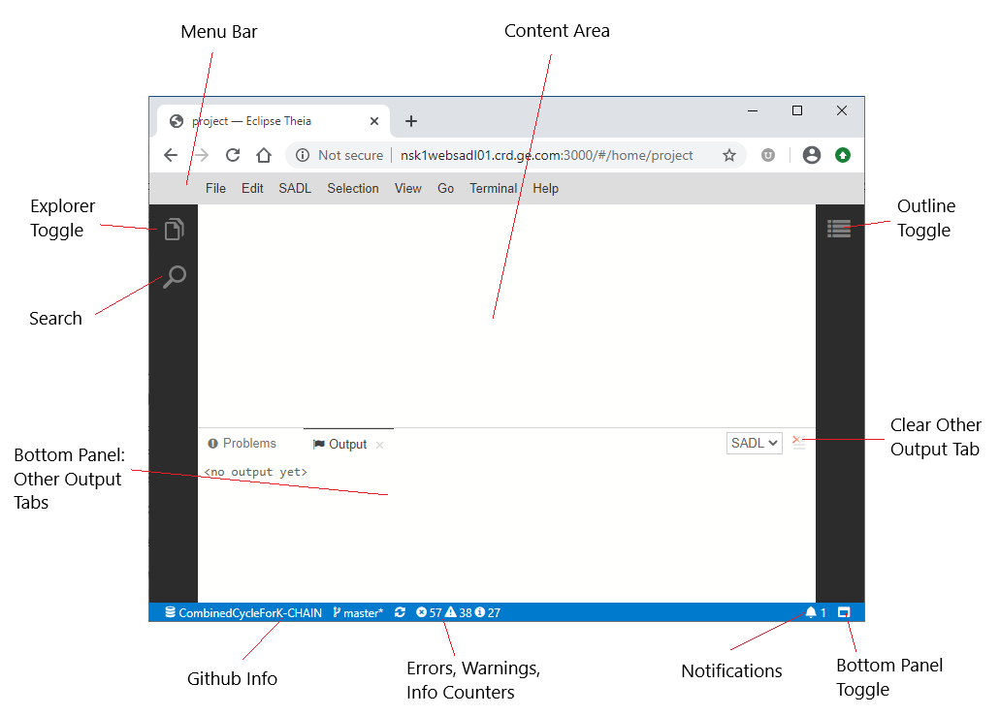
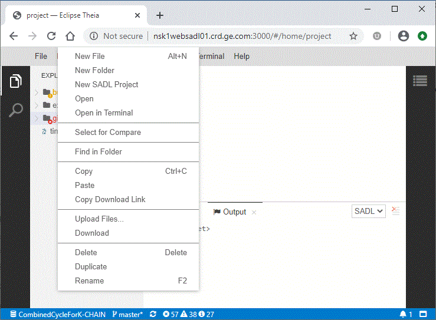
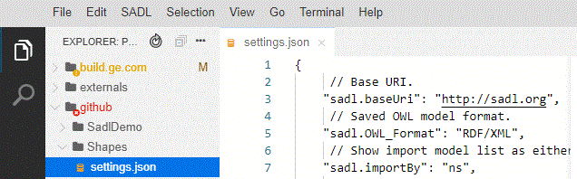
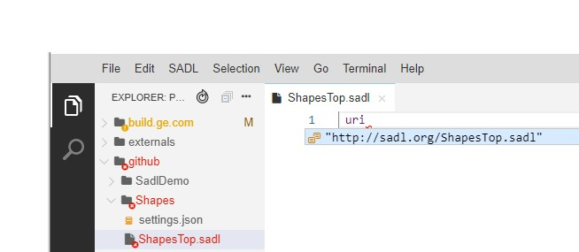
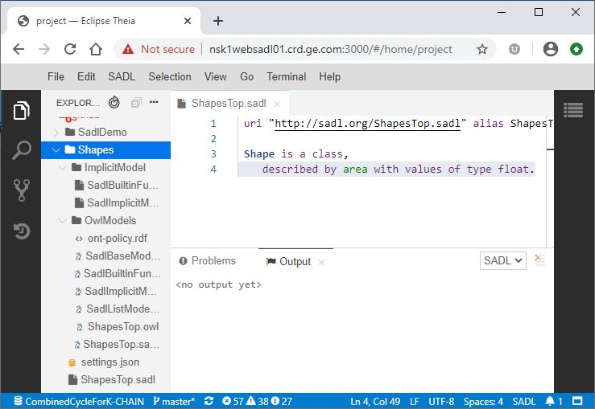
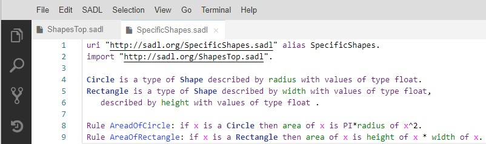
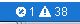
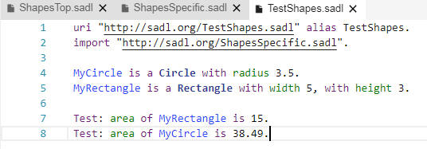
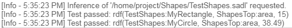

Figure 11: Git View and History
Introduction
Connecting to the WebSADL Backend
Using WebSADL
Creating a SADL Project
Creating SADL Model
Files
Testing a Model
Using WebSADL with Git
Git Setup
Git Affordances in WebSADL
Command-line Git in
WebSADL
WebSADL is a set of services that allow a SADL IDE to be instantiated in a Web browser. The functionality mirrors that of the Eclipse-based SADL IDE. WebSADL capabilities include the following.
Authoring of SADL models (.sadl files) in a feature-rich text editor.
Live model validation with error, warning, and information markers in the editor.
Generation of OWL files from valid SADL models (file format, i.e., .owl, .nt, etc., as specified in the SADL preferences).
Semantic highlighting of content in the SADL editor, e.g., classes are dark blue bold, etc.
Hyperlinking between the SADL model concepts, both from references to declaration and from declaration to references.
Content assist in the SADL editor.
Downloading and managing external OWL resources.
Preferences set via an editable JSON file.
Testing, querying, explanation of SADL models.
Reviewing the inferred model created by reasoning over the OWL model generated from a SADL model via Ask and Test statements.
Integration with Git through GUI items and the git commands in the terminal window (collaboration with the Theia Git extension).
This document is primarily about using WebSADL in a browser. For more information about setting up the WebSADL backend services, please see WebSADL Backend.
The WebSADL client will run in a Web browser. Chrome is recommended and is the browser that has been used in testing.
Connect to the WebSADL backend by entering the service URL of the form "http://<host>:<port>, e.g.,
http://nsk1websadl01.crd.ge.com:3000
If the backend services are running on the same machine, localhost can be used.
The result should be a browser tab with menu items around content areas as shown below.

Figure 1: WebSADL Browser Interface
To create a new SADL project, first make sure the Explorer is visible using the Explorer Toggle. Select a folder under which the new project is to be located and right-click to obtain a popup menu.

Figure 2: Creating a New SADL Project
Click on "New SADL Project" to create a SADL project. Name your project as requested. For purposes of this tutorial, you might want to name it "Shapes". Note: SADL projects should not be nested within SADL projects.

Figure 3: SADL Project Creation Completed
Note that in the new SADL project the "settings.json" file is created. This contains the project's preference settings and can be opened in an editor by clicking on the name of the file in the Explorer.
Now that we have a SADL project, we can begin to create SADL model files. Right-click on the project name (e.g., "Shapes") and select "New File". In the naming dialog give the file a name ending in ".sadl", e.g., "ShapesTop.sadl". The result will be a new SADL model file opened in a SADL editor window. This editor window will have content assist, error, warning, and info markers, hyperlinking, etc., just like the Eclipse-based SADL IDE. Holding down the Control key and pressing the space bar activates content assistance.

Figure 4: Creating a New Model File
Pressing the Enter key will insert the selected suggestion into the model file.
Defining a class "Shape" which is in the domain of property "area" with range "float" results in the following state of the project.

Figure 5: Creating a New Class and Property
Note that an "OwlModels" folder has been created and contains the translated OWL file for our newly created model as well as several other files. The "ImplicitModel" folder contains the definition of the built-in functions supported by the selected reasoner. It also contains the SadlImplicitModel. These two editable files, along with SadlBaseModel.owl and SadlListModel.owl in the OwlModels folder, are implicitly imported by every SADL model.
To complete our simple demo project, we create a second SADL model file which imports the first and defines Circle and Rectangle as subclasses of Shape with defining properties. Finally we add a couple of rules to compute the area of these types of Shape.

Figure 6: Creating a Second Model File Importing the First
Search can be local to a particular file, in which case it can be initiated with control-f or Edit -> Find on the menu bar. In either case, a popup allows text to be entered and arrows allow movement from one matching occurrence to the next. The in-file text search dialog can be dismissed by clicking on the "x" in the upper right corner. Find and replace within a file works similarly. Note that concepts should be renamed using the "Rename Symbol" popup menu choice to rename across all references in the project rather than with find and replace.
Searching the workspace is initiated with Search icon or with control-shift-f or Edit -> Find in Files. The result will be the appearance of the Search tab on the left of the content area and a list of all of the matches to the entered string in the entire workspace. Each occurrence is a hyperlink which, if clicked, will open the file containing the match and highlight the matching text in that file. Icons near the text input box allow additional control of the search.
The bottom panel in the browser can contain any of several tabs. The bottom panel can be toggled in or out of view by clicking on the white rectangle at the right end of the bar at the bottom of the browser. The "SADL" before the rectangle indicates that the current language is SADL.
Figure 7: Bottom Panel Toggle
The Output tab shows the results of running queries and testing models.
The "Problems" tab shows a list of errors and warnings hyperlinked to the location where each occurs. This tab is made visible by clicking on the errors or warnings icon on the status bar across the bottom of the browser window, as shown below.

Figure 8: Problems Tab Toggle and Stats
The icons shown above indicate that there is 1 error and 38 warnings in the current workspace.
The "Terminal" tab is a bash command window which can be used to do more complex git operations.
We can test our model by creating a SADL file which contains some instances of Shape and some tests to verify that the rules compute correct areas.

Figure 9: Testing the Model
By clicking on "SADL" in the menu bar and selecting "Test Model", with the focus in the TestShapes.sadl editor, we can run inference. The results are displayed in the Output window and include the test results.

Figure 10: Inference Results in Output Window
Currently some setup is required to connect WebSADL with a Git repository. The instructions below assume a repository on github.com, and use the SadlDemo repo as an example. The setup can be done from a Terminal window in the WebSADL interface. Note that the Terminal window provides a command-line interface to the SADL backend server. When interacting in the terminal window, you are acting as the backend user, not necessarily as yourself.
Note that if the WebSADL backend running on a server is restarted, steps 5 and 7 must be repeated as they will be lost. Therefore it may be desirable to create a shell script that will do these steps on demand. Here is a template for such a script.
#!/bin/bash
export https_proxy=http://SomeName.proxy.company.com:80
git config --local user.name "Andy Crapo"
git config --local user.email crapo@ge.com
For this script to work, it must be
Once you have a git connection in your workspace, a couple of extra icons will appear on the left side of the browser window.
Figure 11: Git View and History
The first of these causes a git view to be displayed in the left panel of the browser window. In that view is shown the modifications, etc. The second icon will cause a history of git interactions to be shown in the left panel. In each of these views additional icons across the top of the panel allow further graphical interactions with git.
When the current directory of a Terminal Window is within a git repository folder, git actions can be accomplished by typing in commands. What follows is a bare-bones introduction to basic commands that can be used to put changes to models made in WebSADL back into the remote repository. Each command is shown as it would be typed into the Terminal Window followed by an explanation starting with "//", which is not part of the input.. There are many good sources of information on the git command-line interface available on-line.